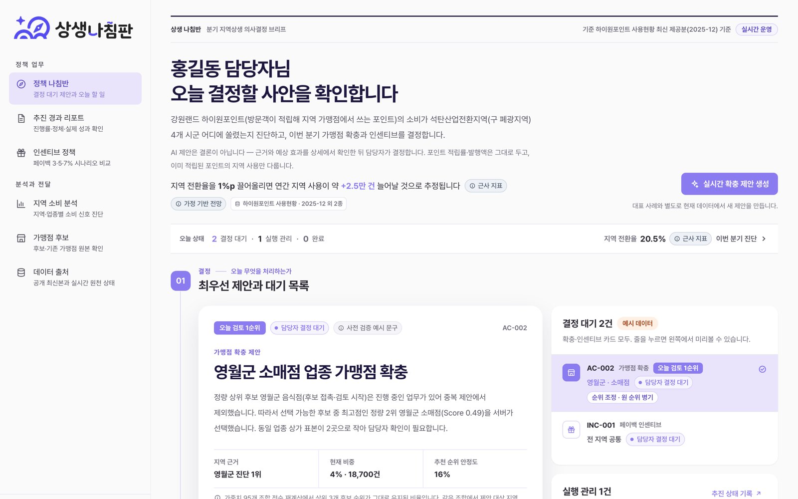
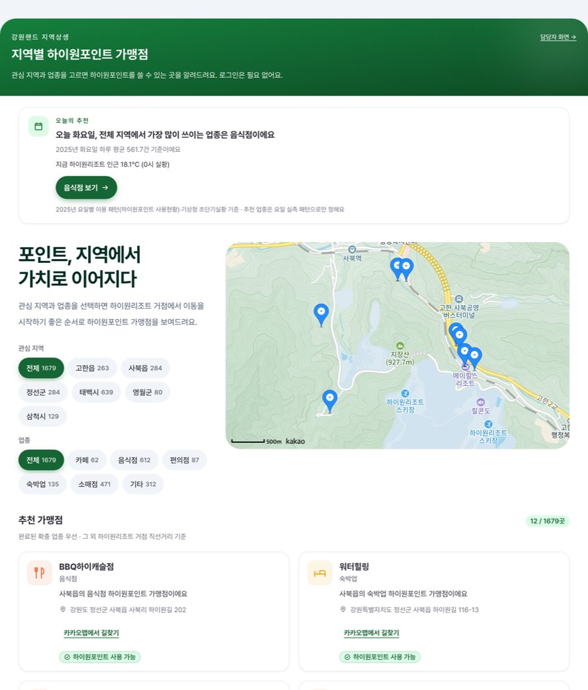
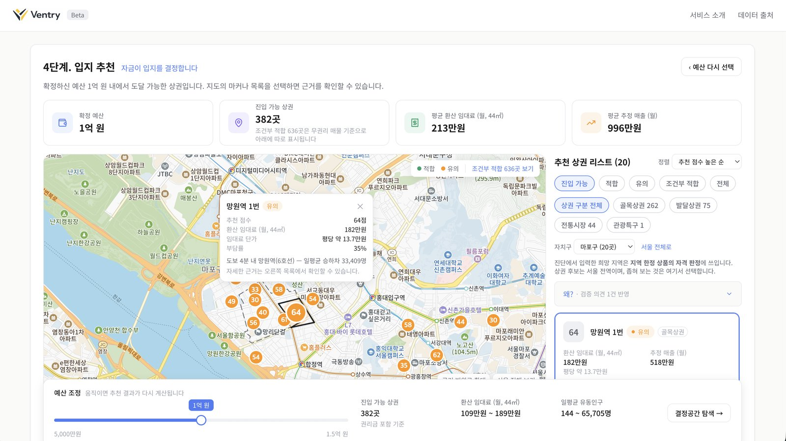
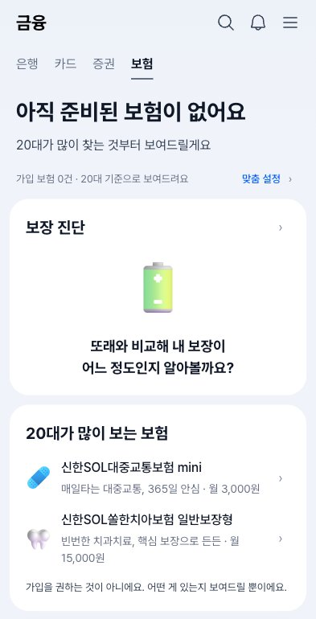
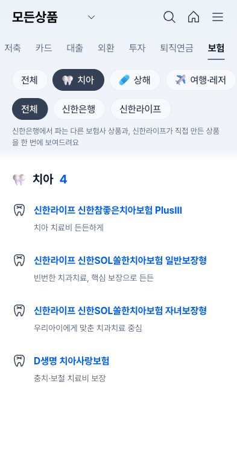
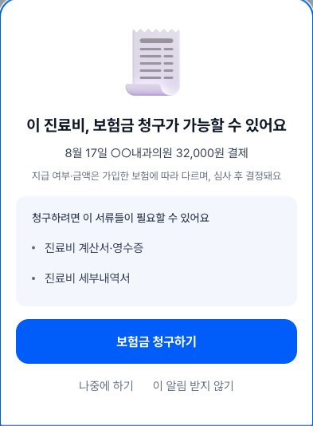

Portfolio 2026
김종광
문제를 직접 정의하고, AI가 낸 답을 검증하는 개발자
한양대학교 ERICA 컴퓨터학부
- 01 상생 나침반공공데이터와 AI로 지역상생 의사결정을 돕는 웹 서비스공공데이터 활용 바이브코딩 경진대회 우수상(2위) · 기획서·자료조사 참여, 발표
- 02 VentryLLM이 숫자를 만들지 않는 창업 입지 컨설팅 에이전트KB국민은행 제8회 Future Finance AI Challenge 출품 · 백엔드(지속 필터, LLM 탐색 계획 검증)
- 03 SOL:VE신한 슈퍼SOL 앱 보험 탭 UX 개선 (고용노동부 미래내일 일경험 × 신한라이프)프로그램 내부 심사 예선 통과, 신한라이프 본사 최종보고회 팀 발표 · 상품 분류 체계·와이어프레임, 보험 메인 React 구현
웹 포트폴리오 jongkwang131.github.io/portfolioGitHub github.com/Jongkwang131
About
문제는 근거로 직접 정의하고, AI의 답은 코드로 검증합니다
한양대학교 ERICA 컴퓨터학부에 재학 중입니다(2022.03~). 2026년 5~9월 금융·공공 분야 팀 프로젝트 네 건에서 기획, UX, 백엔드, 프론트엔드를 맡았습니다. 모든 프로젝트는 팀 작업이며, 각 쪽의 '내 역할' 상자에는 제가 맡은 범위만 따로 적었습니다.
이렇게 일합니다
- 문제를 직접 정의합니다. 상생 나침반에서는 '포인트 소비가 어디에 쏠리는지 데이터로 보이지 않아 담당자가 경험으로 판단한다'는 문제를 세운 기획서·자료조사에 참여했습니다. SOL:VE에서는 슈퍼SOL 보험 화면을 직접 관찰해 '신한은행·신한라이프 탭이 무엇으로 나뉜 것인지 설명이 없다'는 문제를 근거카드로 남겼고, 이 관찰은 보장 목적 중심 탐색 개선의 근거로 쓰였습니다.
- AI의 답을 코드로 검증합니다. LLM이 낸 탐색 계획을 허용된 4개 항목과 대조해 목록 밖 값은 버리고, 응답이 깨지거나 비면 기본 계획으로 되돌리는 코드를 만들고 테스트로 고정했습니다. 프롬프트에는 숫자를 넣지 않아 LLM이 금액을 지어낼 통로도 막았습니다(Ventry).
- 만들어서 확인합니다. Ventry에서는 Spring Boot 백엔드 중 지속 필터·조달 검증·탐색 API를, SOL:VE에서는 보험 메인 화면 React 구현과 청구 흐름 평가 페이지를 맡았습니다.
2026 활동
- 05FIN:NECT 챌린지 — 'MATE' 국제결혼 부부 생활금융 플랫폼 · AI 개발 담당
- 07KB국민은행 제8회 Future Finance AI Challenge — 'Ventry' · 백엔드
- 07–09고용노동부 미래내일 일경험 × 신한라이프 — 'SOL:VE' · 상품 분류 체계·와이어프레임·React 구현 · 발표 전반부 구성안
- 08공공데이터 활용 바이브코딩 경진대회 — '상생 나침반' · 기획서·자료조사 참여, 발표 · 우수상(2위)
도구와 자격
Java · TypeScript · Python / Spring Boot · React / PostgreSQL / Figma · Claude Code · Git·GitHub
정보처리기능사 (2024.04)
Project 01 · 공공데이터 × AI
상생 나침반은 강원랜드 공공데이터로 하이원포인트 소비가 어느 지역에 몰리는지 진단하고, 지역상생 담당자가 다음에 무엇을 할지 결정하도록 돕는 웹 서비스입니다.
- 기간
- 2026.07–08 (기획 7월, 개발·발표 8월)
- 팀
- V.I.B.E 4인
- 대회
- 공공데이터 활용 바이브코딩 경진대회 (강원랜드 공공데이터 활용)
- 결과
- 본선 진출 · 우수상(2위)
- 기술
- Next.js · FastAPI · OpenAI gpt-4o-mini · AWS
- 기획서·자료조사 참여 — '포인트 소비가 어디에 쏠리는지 데이터로 보이지 않아 담당자가 경험으로 판단한다'는 문제 정의
- 최종 발표 — 5분 발표(말하기 1분 30초 + 배포 서비스 라이브 시연 3분 30초)를 직접 진행

Project 01 · 상생 나침반
문제 — 포인트는 쌓이는데, 지역에서는 고르게 쓰이지 않는다
하이원포인트를 지역 가맹점에서 쓴 건수(2025년, 507,628건)의 51%가 리조트 인근 사북읍·고한읍 두 곳에 몰려 있고, 같은 폐광지역인 영월군·삼척시(도계읍)는 4~5%에 그칩니다.
출처: 강원랜드 하이원포인트 사용현황(공공데이터포털, 2025년 1~12월 건수) 팀 집계
해결 — 진단부터 방문객 추천까지 한 흐름으로
- 지역·업종 소비 쏠림 진단
- 서버가 후보 선정 (반경 500m 점수)
- AI가 근거 설명과 반대 관점 3가지 작성
- 담당자가 안전 검토 후 승인
- 추진 단계 추적
- 방문객 위젯에 추천 반영
팀이 정한 AI 통제 원칙
- 숫자·순위·대상은 서버가 정하고, AI는 설명 문장만 씁니다. AI 응답에 섞인 숫자는 원본 데이터로 다시 채웁니다.
- AI가 자기 제안을 반박하는 '반대 관점 3가지'를 함께 만들고, 검증에 실패하면 규칙 기반 문구로 되돌립니다.
- 안전 검토 확인 없이 승인하면 서버가 거부합니다.
- 민감 속성(성별·연령 등)을 추론한 문장은 버리고, 가맹점 5곳 미만 칸은 건수를 숨깁니다.

발표에서 지킨 것, 배운 것
발표 대본 맨 앞에 "'지역 전환율'에는 항상 근사 지표라고 붙인다", "'AI가 결정한다'고 말하지 않는다"는 팀 표현 규칙을 적어 두고 발표했습니다. AI를 쓰는 것만큼, AI가 결정하지 않도록 설계하고 그 사실을 정확히 설명하는 일이 중요하다는 것을 배웠습니다.
Project 02 · 금융 × AI 에이전트
예비창업자에게 필요한 답은 '어디가 좋은가'보다 '내 돈에 빌릴 수 있는 돈을 더하면 어디까지 들어가고, 들어가서 버틸 수 있는가'입니다. Ventry는 정책자금·보증·대출 자격과 서울 상권 공공데이터를 묶어 이 질문에 답하는 입지 컨설팅 에이전트입니다.
- 기간
- 2026.07.19 – 08.02 (15일)
- 팀
- 3인
- 대회
- KB국민은행 제8회 Future Finance AI Challenge 출품
- 기술
- Spring Boot(Java) · PostgreSQL · React · Python · OpenAI API

Project 02 · Ventry
핵심 설계(팀) — 계산은 규칙이, 말은 AI가
- 입력: 자금·업종·지역
- 규칙 계산(같은 입력이면 같은 결과): 자격 확인·비용·점수·예산별 후보 수
- LLM 3역할: 탐색 항목 고르기 / 문장 다듬기 / 리스크 반박
- 검증: 입력에 없는 숫자·허용 목록 밖 값이면 버림
- 실패하면 미리 써 둔 기본 문장·기본 항목으로 대체 (리스크 검증은 '검증 생략' 표시)
- 화면: 지도 판정과 근거
내가 구현한 것
- LLM 탐색 계획 검증 — LLM이 고른 탐색 항목 중 허용 목록 밖 값은 버리고, 응답이 깨지거나 남는 항목이 없으면 기본 계획으로 되돌립니다. 프롬프트에는 숫자를 넣지 않았고, 이 규칙을 테스트로 고정했습니다.
- LLM 호출 가드 — 응답 지연·오류·동시 호출 초과가 생기면 기본 문장으로 대체되도록 막습니다.
- 지속 필터 — 월 상환 부담까지 반영해 '들어갈 수 있는 곳'과 '버틸 수 있는 곳'을 나눕니다.
- 조달 검증·인사이트 조립 — 정책자금·보증·대출 조합이 필요한 자금을 덮는지 확인하고, '추가 조달하면 후보가 늘어난다'는 문장은 버틸 수 있는 후보 수와 고지 문구가 함께 있을 때만 만듭니다.
- 탐색 API에 실계산 연결·후보 상권 DB 조회·캐시, 단위 테스트 파일 12개
데모에서 보이는 것
예산 1억 원이면 진입 가능한 상권은 382곳입니다. 3,869만 원을 더 조달하면 1,014곳으로 늘지만, 상환 부담까지 보면 버틸 수 있는 곳은 244곳입니다. 이 문장을 만드는 인사이트 조립과, 그 안의 조달 검증·지속 필터(244곳)는 제가 구현했습니다. 진입 후보 수를 세는 계산 함수는 팀장이 만들었습니다.
가상 데모 프로필(예비창업자 · 자기자본 5,000만 원 · 마포 카페) 기준
팀이 측정한 결과
- AI가 공고문에서 뽑은 정책자금 정보 420칸 중 86.7%가 사람이 검수한 값과 일치
- 화면에 띄우는 공고문 인용 16개 모두 원문과 글자 그대로 일치 (인용이 있는 상품 22/26건)
- 실제 서버를 띄운 통합 점검 21개 항목 모두 통과
Project 03 · 금융 UX × 기업 과제
SOL:VE는 신한 슈퍼SOL 앱의 보험 탭을 20대가 실제로 쓰게 만드는 UX 개선 프로젝트입니다. 새 기능을 얹는 대신, 이미 있는 기능의 위치와 연결을 다시 설계했습니다.
- 기간
- 2026.07.27 – 09.20 (8주)
- 팀
- SOL:VE 4인
- 프로그램
- 고용노동부 미래내일 일경험(프로젝트형) × 신한라이프
- 결과
- 신한라이프 본사 최종보고회에서 팀 개선안 발표(2026.09.22) · 프로그램 내부 심사 예선 통과
- 기술
- Figma · React 19 · TypeScript · Vite · Vercel


Project 03 · SOL:VE
문제 재정의 — '보험 탭 활성화'에서 '내 보험을 이해하게 하기'로
기업 과제는 보험 탭 활성화였고, 대상으로 '대학생·사회초년생 눈높이'를 제시했습니다. 팀의 사전 설문(n=100, 인스타그램 모집, 20대 94명)에서 88%가 자기 보험의 보장 내용을 충분히 알지 못한다고 답했고, 팀은 문제를 '20대가 이미 가진 보험을 이해하고 쓰게 하는 것'으로 구체화했습니다.
편의표본이라 20대 전체를 대표하지는 않습니다.
개선 방향 4가지
- 보장 목적 중심 상품 탐색
- 맞춤 보험 홈
- 보장 진단 우선순위 안내
- 결제 기반 청구 알림 (사용자가 켠 경우만)

내가 한 일
- 경쟁앱·현행 앱 분석 — 팀장과 2인 1조로 모니모를 맡아 화면 110장을 캡처하고 경쟁앱 근거카드 6장으로 정리했습니다. 슈퍼SOL 보험 화면을 직접 관찰한 카드 4장도 썼고, 그중 '신한은행·신한라이프 탭이 무엇으로 나뉜 것인지 설명이 없다'는 관찰은 탐색 개선의 근거로 인용됐습니다.
- 통일 카테고리 체계 — 은행 탭(10개)과 라이프 탭(5개)에 따로 있던 상품 카테고리를 9개로 합치고 26개 상품을 다시 분류했습니다. 이 체계는 최종 프로토타입의 상품 분류에 그대로 쓰였습니다. 팀이 정한 '보장 목적 먼저, 회사는 필터로' 방향에 맞춰 상품 찾기 시안 3개와 목록·상품 상세 와이어프레임도 Figma로 그렸습니다.
- React 구현 — 보험 메인(보유 2건·0건 상태별 화면), 맞춤 구성 끄기, 내 보험 화면을 구현했습니다. 기존 앱의 색·글꼴 규격은 그대로 두고 화면 구조만 바꿨습니다.
- 청구 흐름 평가 — 청구 설문 개정안을 쓰고, 설문 웹의 청구 평가 페이지를 별도로 만들었습니다. 발표 전반부 구성안도 맡았습니다.
참여기업 피드백 (팀 결과보고서에 기록)
제 통일 카테고리 체계가 들어간 '보장 목적 중심 상품 분류'에 대해 참여기업은 "고객이 상품을 탐색하는 기준을 회사에서 보장으로 옮긴 접근"이라는 의견을 주었습니다. 기존 기능을 재구성한 방식은 "실제 서비스 적용 가능성을 검토하기 용이하다"고 했고, 결제 기반 청구 알림은 고객 동의와 내부 절차를 더 검토해야 한다고 했습니다.